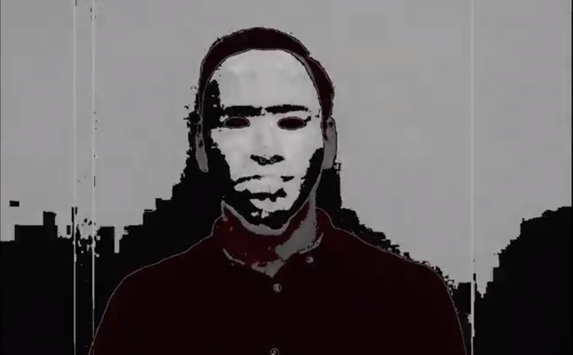
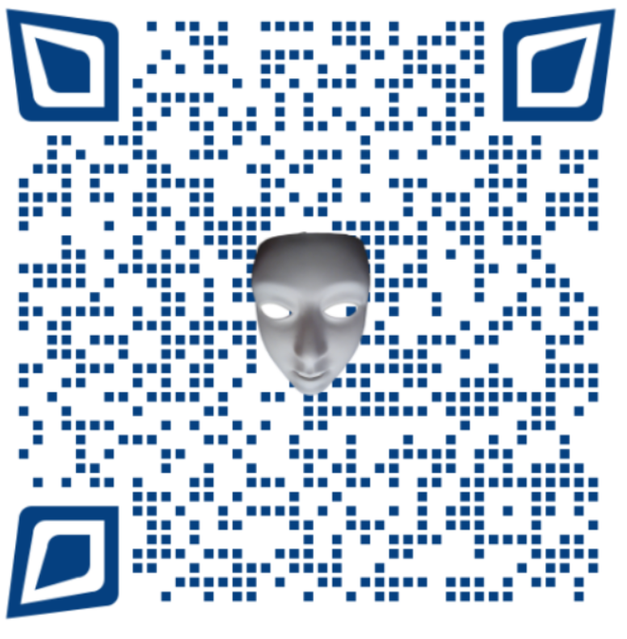
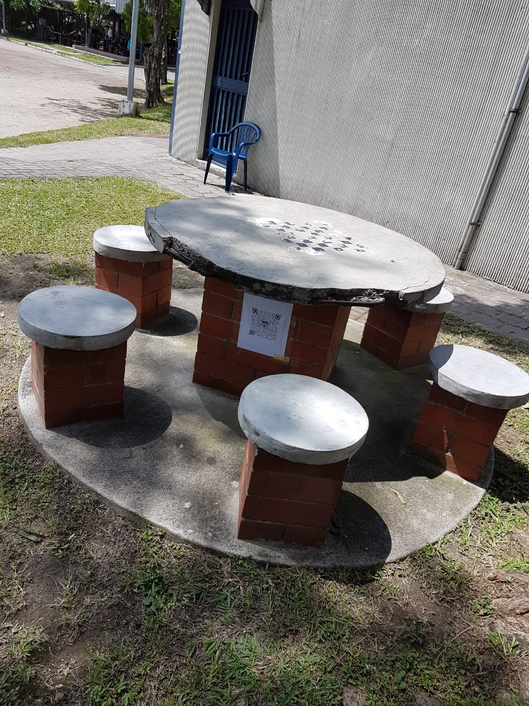
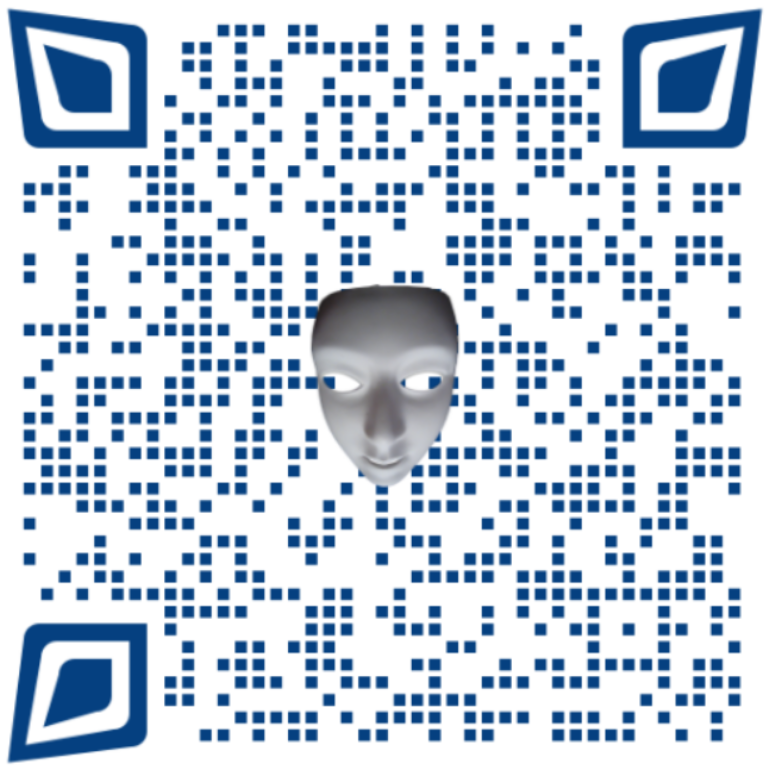
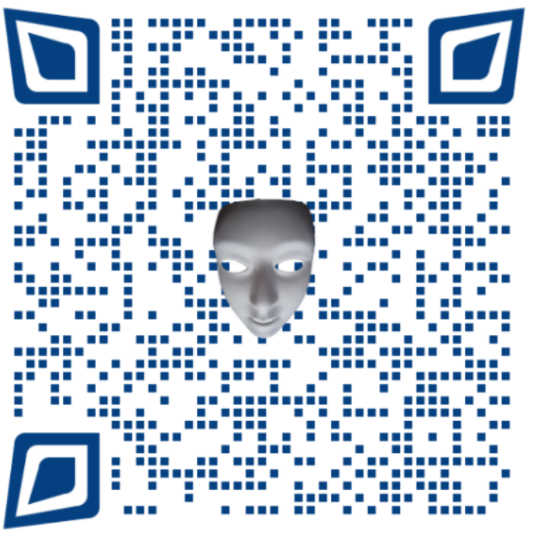

Capítulo 1 - “Begin;”
Durante la clase de programacion web del dia lunes a las 17 horas recibimos
un sospechoso video que parecia de un terroriste cibernetico
llamado ALEV RAV. Este sospechoso sujeto que nadie tenia idea de quien era, \
planeaba destruir la UCA el dia viernes. y teneia un solo objetivo
que era recurrir al articulo en el reglamento que dicta que si la universidad es
completamente destruida por algun desastre, todos los alumnos
inscritos recibiran sus titulos inmediatamente.

Un chivo llamado Kurt nos pidio ayuda para que lo apoyaramos y detuvieramos a ese criminal y para eso necesitaba
nuestro apoyo. Tambien nos dejo un codigo, una pista para que no fuera descubierto facilmente y asi cumplir
con la mision
Capítulo 2 - “O-O-O”
Dia martes Alev Rav tenia controlado todo, parecia que lograria llevar a cabo su malefico plan, pocos eran
lo que habian logrado decifrar la pista pero los mas prodigios lograron llegar a ella la cual estaba ubicada en
el campo de batalla de las grandes liga , en una de las mesas del poli deportivo.


Esta pista no daria un mayor reto subiendo la dificultad del nivel, el tiempo corria
y debia terminar la mision
El mensaje era de la complice de Kurt, Ada Jarvis. Ella nos porpuso
un nuevo reto para encontrar a Ale Rav:
Mensaje de Ada
Capítulo 3 - “minus monocromo”
Todo paracia color de rosas, habiamos logrado una victoria mas la luego de que logragaran codificar
el problema, esta nos llevo al valle de la muerte donde nos pedia que encontraramos a un oraculo
que en su vida pasaa fue un pintor, la pista decia que debiamos ganar la confianza del oraculo para asi lograr
que nos entregara la otra pista, fue dificil, no confiaba en nadie porque habia sido traicionado mucghas veces
pero cuando mencionamos Ale Rav decicio ayudarnos a detenerlo como venganza, ya que el fue su mejor
amigo y lo habia traicionado.

La pista estaba oculta en una de sus murales, el cual habia dejado incompleto por la traicion de su excolega
Capítulo 4 - “cumulonimbus”
Por la tarde del jueves estabamos en clas de ADM. de BD todo estaba con tranquilidad hasta que recibimos una llamada de emergencia
de un espia que habia logrado descubrir un secreto de Ale Rav que no ayudaria a detenerlo, pero fue descubierto y su nave nodriza
fue atacada por un misil asi que fuimos a buscar donde se habia estrellado pero llegamos muy tarde pero dio su vida por la resistencia
y logro traer consigo la proxima pista.
La ultima pista nos llevaria a conde Kurt para finalmente lograr impedir el atacque de Ale Rav

Capítulo 5 - “Commit;”
Logramos decifrar la ultima pista que nos levaria a un remoto lugar del mundo muy apartado
de la civilizacion, donde Kurt se ocultaba era su base secreta "El MAGNA 5-1", entramos y no nos encontramos con
nadie, de la nada alguein aparecio en frente de nosotros era Kurt, nos habia agradecido que lograramos encontrarlo
nos dijo que habia descubierto la identidad de Ale Rav, pero de la nada se empezo a sentir mal, habia un traidor entre nosotrosalguien lo
habia envenenado, terinando con la vida de Kurt pero antes de su muerte nos dejo el video donde revelaba la identidad de le Rav
fue asi cuando descubrimos que era....
Era nuestro mentor no habiamos sentido decepcionado, nos habia traicionado, nacio rencor dentro de nosotros, no podiamos creerlo
y era nuestro deber terminar con el legado que Kurt nos dejo...